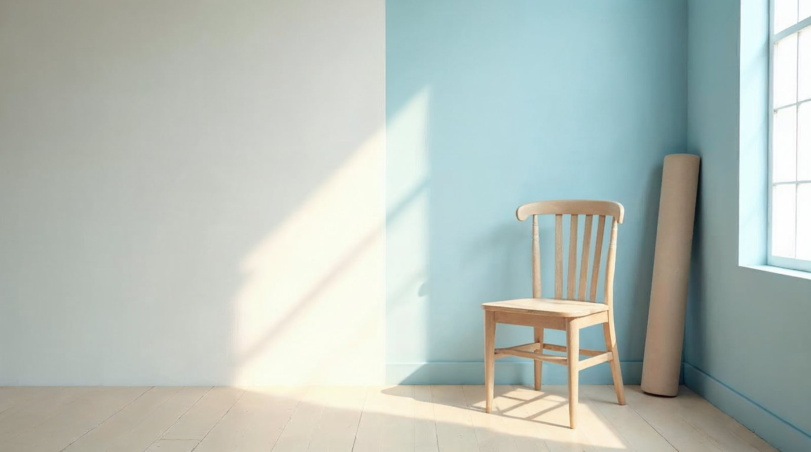
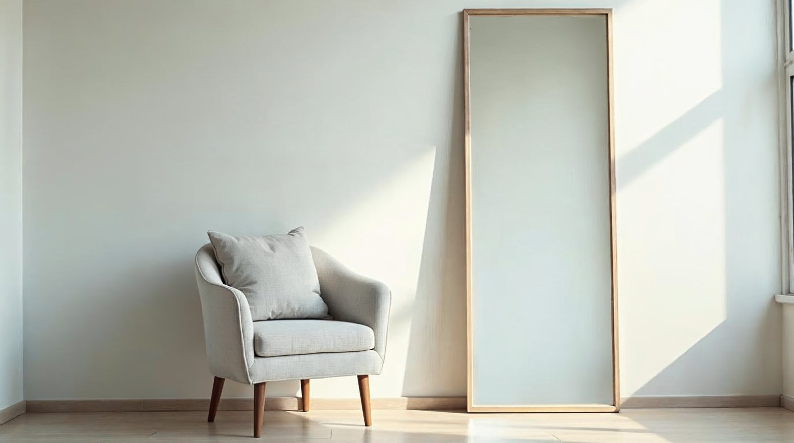
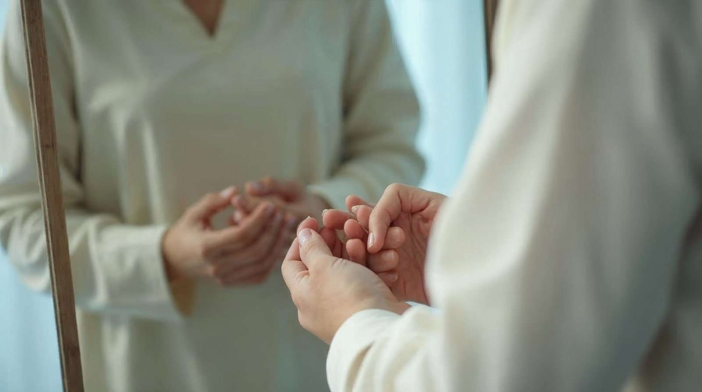
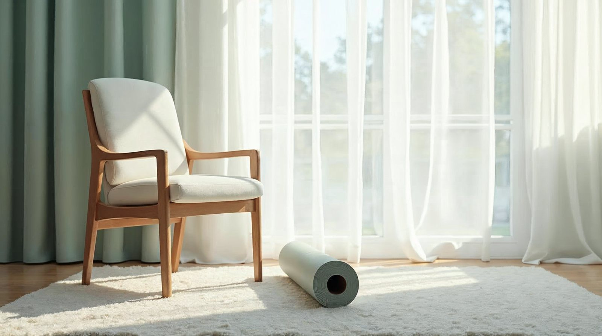
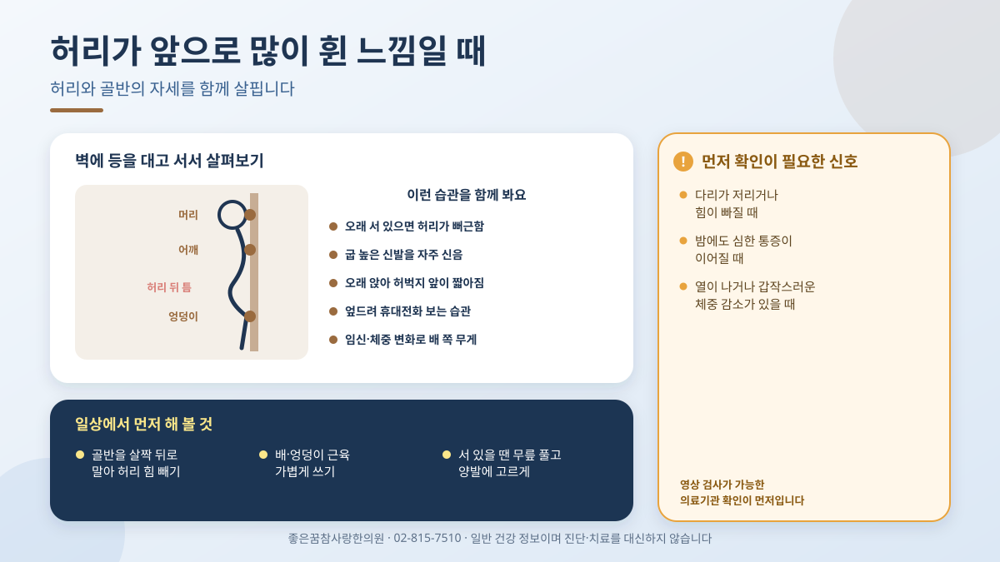

이종호 한의사 감수좋은꿈참사랑한의원 대표원장 (한의사 면허번호 19769)발행 2026-11-22 · 수정 2026-11-26
이 글의 차례
허리가 앞으로 많이 휜 느낌이 들면 허리만 보기보다 골반이 앞으로 기운 정도와 배·엉덩이 근육을 얼마나 쓰는지를 함께 보는 것이 순서입니다. 허리는 원래 앞으로 살짝 휜 곡선이 있어서, 휜 것 자체보다 그 곡선이 지나치게 깊어진 채로 오래 서 있거나 걸을 때 허리 아래가 뻐근해지는지가 중요합니다.
벽에 등을 대고 서서 허리 뒤로 손을 넣어 보는 간단한 점검으로 대략을 가늠할 수 있고, 서는 습관을 바꾸며 2~4주 지켜볼 수 있습니다. 다만 다리 저림이나 힘 빠짐이 있거나, 운동하는 청소년이 허리를 젖힐 때마다 아프다면 자세 점검보다 의료기관 확인이 먼저입니다.
골반이 앞으로 기운다는 것은 무슨 뜻인가요
골반은 허리 아래에서 그릇처럼 몸통을 받치고 있습니다. 이 그릇이 앞으로 기울면 앞쪽 끝이 내려가고 엉덩이가 뒤로 빠지면서, 위에 얹힌 허리가 따라 휘어 곡선이 깊어집니다. 옆에서 보면 배가 나오고 엉덩이가 들린 듯 보이는 모습입니다.
골반을 앞으로 당기는 쪽은 허벅지 앞과 골반 앞쪽 근육, 허리 근육이고, 반대로 붙잡아 주는 쪽은 배와 엉덩이, 허벅지 뒤 근육입니다. 한쪽이 짧아지고 다른 쪽이 약해지면 기울기가 깊어지기 쉬워, 저는 늘일 곳과 힘을 길러야 할 곳을 나눠서 말씀드립니다.
그래서 같은 동작을 모든 분께 똑같이 권하지 않습니다. 허벅지 앞이 많이 굳은 분은 늘이는 동작을, 엉덩이 힘이 약한 분은 엉덩이 들기를 먼저 하는 식으로 순서를 정합니다.
왜 이런 불편이 생길 수 있나요
- 배와 엉덩이 근육을 덜 쓰고 허리 근육에 기대어 서면 골반이 앞으로 기울며 허리 곡선이 깊어질 수 있습니다.
- 오래 앉아 있으면 허벅지 앞쪽과 골반 앞 근육이 짧아진 채로 굳어, 일어섰을 때 골반을 앞으로 당기는 경우가 있습니다.
- 굽 높은 신발은 몸을 앞으로 기울게 해, 이를 버티려고 허리를 더 젖히게 만들기도 합니다.
- 임신·출산이나 체중 변화처럼 배 쪽 무게가 늘어난 시기에도 같은 자세가 생기기 쉽습니다.
- 무릎을 뒤로 잠그고 배를 내민 채 서는 습관, 허리를 많이 젖히는 운동의 반복은 허리 뒤쪽 관절에 부담을 더할 수 있습니다.
왜 오후가 되면 허리가 더 뻐근할까요
아침에는 괜찮다가 오후로 갈수록 허리 아래가 묵직해진다는 분이 많습니다. 하루 동안 서고 앉기를 반복하며 배와 엉덩이 근육이 지치면, 몸은 허리 근육에 더 기대어 버티게 되고 골반도 조금씩 앞으로 기울기 쉽습니다.
이렇게 지친 상태에서 무릎을 잠그고 배를 내민 채 서면 허리 뒤쪽 관절이 눌리는 시간이 길어집니다. 오후에 뻐근함이 커지는 시각을 적어 두면, 그 전에 자세를 바꾸고 잠깐 걷는 시간을 미리 넣어 볼 수 있습니다.
비슷해 보여도 다르게 보는 경우
- 엉덩이 근육이 발달해 허리가 깊이 휜 것처럼 보이지만 골반 기울기는 크지 않은 경우도 있어, 겉모습보다 골반 뼈의 위치를 손으로 짚어 봅니다.
- 반대로 허리 곡선이 줄어 평평한 일자허리도 오래 앉으면 허리가 뻐근할 수 있어, 휜 정도만으로 판단하지 않습니다.
- 허리 아래가 아프다고 느끼지만 사실은 엉덩이 옆이나 골반 뒤 관절 쪽이 불편한 경우도 있어, 아픈 자리를 손가락으로 짚어 보시도록 여쭙습니다.
- 등 위쪽이 많이 굽은 분은 균형을 맞추려 허리가 더 젖혀지기도 해, 허리만이 아니라 등의 모양도 함께 봅니다.
먼저 이렇게 여쭙니다
- 오래 서 있거나 걸을 때 허리가 아프다가 앉으면 편해지나요?
- 허리를 뒤로 젖힐 때와 앞으로 숙일 때 중 어느 쪽이 불편한가요?
- 누워 있을 때 허리와 바닥 사이가 많이 뜨나요?
- 굽 높은 신발을 자주 신나요?
- 하고 있는 운동이 허리를 많이 젖히는 동작인가요?
- 엎드려 자거나 배를 깔고 휴대전화를 보는 습관이 있나요?

일상에서 먼저 해 볼 수 있는 것
- 서 있을 때 무릎을 살짝 풀고 체중을 양발에 고르게 싣기
- 벽에 등을 대고 서서 배꼽을 등 쪽으로 살짝 당겨 허리 뒤 빈틈을 줄였다가 풀기, 10번
- 누워서 무릎을 세우고 엉덩이 힘으로 엉덩이를 살짝 들어 올리기, 천천히 10번(허리를 젖히지 않기)
- 한쪽 무릎을 바닥에 대고 반대쪽 발을 앞에 둔 자세에서 엉덩이에 힘을 주고 골반을 살짝 앞으로 밀어 허벅지 앞을 20~30초 늘이기(허리는 젖히지 않기)
- 40~50분 앉아 있었다면 일어나 1~2분 걷기
- 굽 높은 신발을 신는 날은 굽 낮은 신발을 챙겨 바꿔 신기
- 엎드려 자기보다 바로 누워 무릎 아래 베개를 받치거나, 옆으로 누워 무릎 사이에 베개 끼우기
앉는 자세도 함께 바꿔 보세요
허리 곡선은 서 있을 때만의 일이 아닙니다. 하루 대부분을 앉아 보내면 골반 앞쪽이 접힌 채로 굳어, 일어섰을 때 골반을 앞으로 끌어당기기 쉽습니다.
- 의자 끝에 걸터앉아 허리를 젖히기보다, 엉덩이를 깊숙이 넣고 등받이에 기대 앉습니다.
- 무릎이 엉덩이보다 조금 낮거나 비슷한 높이가 되게 의자를 맞춥니다.
- 허리 뒤에 작은 쿠션을 대면 곡선을 억지로 만들지 않고 편하게 받칠 수 있습니다.
- 앉아 있는 동안에도 가끔 골반을 앞뒤로 천천히 굴려, 한 자세로 굳지 않게 합니다.
- 일어설 때는 허리를 젖히며 일어나기보다 엉덩이에 힘을 주고 발로 바닥을 밀며 일어섭니다.
운동할 때 조심할 동작은 무엇일까요
- 엎드려 상체를 크게 젖히는 동작, 다리를 뒤로 높이 차올리는 동작은 허리 뒤쪽에 부담을 더할 수 있어 통증이 있는 동안은 줄입니다.
- 무거운 무게를 머리 위로 드는 운동은 허리가 젖혀지기 쉬워, 배에 힘을 먼저 주고 무게를 낮춰서 합니다.
- 윗몸일으키기를 빠르게 반복하면 골반 앞 근육을 더 쓰게 되는 경우가 있어, 천천히 배를 말아 올리는 동작이 편하다는 분이 많습니다.
- 달리기 뒤 허리가 뻐근하다면 허벅지 앞을 늘이는 시간을 따로 두세요.
운동을 쉬라는 뜻은 아닙니다. 지금 허리에 맞는 동작을 고르고, 익숙해지면 조금씩 범위를 넓혀 가면 됩니다.
배에 힘을 준다는 것은 어떤 느낌일까요
배에 힘을 주라고 하면 숨을 참고 배를 딱딱하게 만드는 분이 많습니다. 제가 말씀드리는 것은 그보다 훨씬 가벼운 힘입니다. 기침을 한 번 살짝 할 때 아랫배가 단단해지는 그 정도를, 숨을 편히 쉬면서 유지하는 느낌입니다.
바로 누워 무릎을 세우고 손가락을 골반 앞쪽 뼈 바로 안쪽에 대 보세요. 숨을 내쉬며 배꼽을 등 쪽으로 살짝 당기면 손끝 아래가 단단해지는 것이 느껴집니다. 이 느낌을 누워서 익힌 뒤, 앉아서, 서서 차례로 해 보면 일상에서도 쓰기 쉬워집니다.
허리를 억지로 펴려 애쓰기보다 이 가벼운 힘을 자주 떠올리는 것이 곡선을 받치는 데 더 오래 남습니다.
출산 뒤에는 무엇을 더 살피나요
임신 기간 동안 배가 앞으로 나오며 허리 곡선이 깊어지고, 배 근육은 길게 늘어난 상태로 지내게 됩니다. 출산 뒤에도 한동안은 배 힘이 잘 돌아오지 않아, 아이를 안고 서는 자세에서 허리가 쉽게 젖혀집니다.
그래서 출산 뒤 허리가 불편해 오신 분께는 출산 시기와 수유 자세, 아이를 주로 안는 쪽을 함께 여쭙습니다. 배 가운데가 벌어진 느낌이 있는지도 말씀해 주시면 집에서 할 동작을 고르는 데 참고합니다. 한약을 상담하실 때는 수유 중인지, 드시는 약이 있는지를 먼저 확인합니다.
골반 말기는 어떻게 하나요
- 벽에 뒤꿈치를 한 뼘쯤 떼고 등을 기대 섭니다. 무릎은 살짝 풉니다.
- 숨을 내쉬며 꼬리뼈를 앞쪽 아래로 살며시 말아, 허리 뒤의 빈틈이 벽에 가까워지게 합니다.
- 엉덩이를 쥐어짜듯 힘주지 말고, 아랫배의 가벼운 힘으로 3초쯤 머문 뒤 천천히 풉니다.
- 10번을 한 묶음으로, 오래 서 있는 날은 쉬는 시간마다 한 묶음씩 해 봅니다.
허리 뒤가 벽에 완전히 붙을 필요는 없습니다. 틈이 조금 줄어드는 정도면 충분하고, 하는 동안 허리가 아프면 범위를 줄입니다. 거울 옆에서 해 보면 골반이 움직이는 모습을 눈으로 확인할 수 있습니다.

상황별 예시
- 예를 들어 매장이나 강의실에서 하루 종일 서 있는 직장인이라면, 오후가 될수록 배를 내밀고 무릎을 잠근 채 서기 쉽습니다. 낮은 받침에 한 발씩 번갈아 올려 두고, 쉬는 시간마다 벽에 기대 골반 말기를 해 보세요.
- 예를 들어 출산 뒤 아이를 한쪽 골반에 걸쳐 안는 일이 많은 부모라면, 배 근육이 아직 약한 상태에서 허리 곡선이 깊어지기 쉬워 안는 쪽을 번갈아 바꾸고 누워서 엉덩이 들기를 짧게 자주 해 봅니다.
- 예를 들어 무용이나 체조처럼 허리를 많이 젖히는 운동을 하는 청소년이 젖힐 때마다 허리 아래가 아프다면, 연습량을 줄이고 정형외과에서 먼저 확인해 보시길 권합니다.
- 예를 들어 하루 종일 앉아 일하고 퇴근 뒤 높은 굽의 신발로 오래 걷는 경우라면, 골반 앞이 접힌 채 굳은 상태에서 몸이 앞으로 쏠려 허리가 더 젖혀질 수 있습니다. 걷기 전에 허벅지 앞을 늘이고, 오래 걷는 날은 굽 낮은 신발을 챙겨 봅니다.
- 예를 들어 헬스장에서 무거운 무게로 어깨 위 들기를 하고 나면 허리 아래가 뻐근하다면, 무게를 낮추고 배에 힘을 준 채 허리가 젖혀지지 않는 범위에서만 해 봅니다.

스스로 점검해 보세요
- 벽에 뒤꿈치·엉덩이·날개뼈를 대고 섰을 때 허리 뒤에 주먹이 들어갈 만큼 틈이 넓다
- 옆에서 찍은 사진에서 배가 앞으로, 엉덩이가 뒤로 빠져 보인다
- 오래 서 있으면 허리 아래가 뻐근하다가 앉으면 편해진다
- 무릎을 뒤로 젖혀 잠근 채 서는 습관이 있다
- 바로 누우면 허리가 떠서 무릎을 세워야 편하다
- 오후가 될수록 허리 아래가 묵직해지고 저녁에 가장 뻐근하다
- 누워서 한쪽 무릎을 가슴으로 당기면 반대쪽 허벅지가 바닥에서 들린다
- 허리를 젖힐 때 허리 아래가 찌릿하다
손바닥 하나가 겨우 들어가는 정도의 틈은 흔한 범위이고 개인차도 큽니다. 여러 항목에 해당하면서 통증이 이어진다면 자세와 근육의 쓰임을 함께 살펴보세요.
점검은 아침과 저녁에 한 번씩 해 보면 차이가 보이기도 합니다. 저녁에 틈이 더 넓어지고 허리가 더 뻐근하다면, 하루 동안 근육이 지치며 자세가 무너지는 쪽을 먼저 생각해 봅니다. 사진과 함께 적어 두면 진료 때 이야기를 나누기가 한결 수월합니다.
한의원에서 함께 살필 수 있는 경우
- 허리가 과하게 휘어 보인다고 느끼는 경우 허리와 골반의 자세를 함께 살핍니다.
- 서 있을 때 허리가 뻐근한 경우 서는 습관과 좌우 균형을 봅니다.
- 복부가 나오고 허리가 불편한 경우 생활 습관과 자세를 같이 짚어 봅니다.
- 출산 뒤 허리 곡선이 달라진 느낌이 드는 경우 배와 골반 주변 근육의 쓰임을 함께 살핍니다.
좋은꿈참사랑한의원에서는 첫 방문 때 어떤 자세에서, 언제부터 허리가 불편한지 먼저 충분히 듣습니다. 이어서 모든 분께 맥을 짚고, 서 있는 모습을 앞과 옆에서 보며 좌우 균형과 골반 기울기, 앞뒤 곡선을 차례로 살핍니다.
허리 숙이기와 젖히기, 한 발 서기 같은 움직임과 다리 근력·감각을 확인하고, 근육과 힘줄 상태를 볼 필요가 있다고 판단되면 초음파를 함께 씁니다. 그다음 추나·침·약침·온열 가운데 지금 맞는 방법과 순서를 정하고 그 이유를 설명해 드립니다. 귀가 전에는 서는 자세와 앉는 자세, 집에서 할 동작을 직접 해 보며 맞춰 드립니다.

얼마나 지켜보고 언제 상담할까요
- 서는 습관과 신발을 바꾸고 골반 말기·엉덩이 들기를 하루 두세 번 하며 2~4주 동안 허리가 뻐근해지는 시간을 적어 봅니다.
- 4주가 지나도 오래 서 있을 때마다 같은 통증이 반복되거나 아침에 허리가 굳는 날이 늘면 상담을 권합니다.
- 동작을 할 때마다 통증이 커지면 그 동작은 멈추고 진료에서 맞는 동작을 먼저 정합니다.
- 다리 저림이나 힘 빠짐이 생기면 지켜보지 말고 바로 의료기관에서 확인합니다.
이렇게 기록해 오시면 상담이 쉬워집니다
- 허리가 뻐근해지는 자세와 시간(오래 서 있기, 걷기 등)
- 자주 신는 신발의 굽 높이
- 하고 있는 운동과 횟수
- 출산이나 체중 변화 같은 최근 몸의 변화
- 같은 옷차림으로 옆에서 찍은 선 자세 사진
- 허리가 뻐근해지기 시작하는 시각과 그때 하고 있던 일
- 하루에 앉아 있는 시간과 의자의 모양
이런 증상은 먼저 확인이 필요합니다
- 다리가 저리거나 힘이 빠지는 경우
- 대소변 조절이 어려워진 경우
이런 신호가 있으면 한의원보다 가까운 병원이나 응급실을 먼저 찾으세요.
관련 글

여쭙는 것
- 오래 서 있거나 걸을 때 허리가 아프다가 앉으면 편해지나요?
- 허리를 뒤로 젖힐 때와 앞으로 숙일 때 중 어느 쪽이 불편한가요?
- 누워 있을 때 허리와 바닥 사이가 많이 뜨나요?
생활에서 해 볼 것
- 서 있을 때 무릎을 살짝 풀고 체중을 양발에 고르게 싣기
- 벽에 등을 대고 서서 배꼽을 등 쪽으로 살짝 당겨 허리 뒤 빈틈을 줄였다가 풀기,…
- 누워서 무릎을 세우고 엉덩이 힘으로 엉덩이를 살짝 들어 올리기, 천천히 10번(허리…
한의원에서 함께 살필 것
- 허리가 과하게 휘어 보인다고 느끼는 경우 허리와 골반의 자세를 함께 살핍니다.
- 서 있을 때 허리가 뻐근한 경우 서는 습관과 좌우 균형을 봅니다.
- 복부가 나오고 허리가 불편한 경우 생활 습관과 자세를 같이 짚어 봅니다.
먼저 확인이 필요한 신호
- 다리가 저리거나 힘이 빠지는 경우
- 대소변 조절이 어려워진 경우
한눈에 보는 표
| 구분 | 핵심 |
|---|---|
| 여쭙는 것 | 오래 서 있거나 걸을 때 허리가 아프다가 앉으면 편해지나요? 허리를 뒤로 젖힐 때와 앞으로 숙일 때 중 어느 쪽이 불편한가요? |
| 생활에서 해 볼 것 | 서 있을 때 무릎을 살짝 풀고 체중을 양발에 고르게 싣기 벽에 등을 대고 서서 배꼽을 등 쪽으로 살짝 당겨 허리 뒤 빈틈을 줄였다가 풀기, 10번 |
| 한의원에서 함께 살필 것 | 허리가 과하게 휘어 보인다고 느끼는 경우 허리와 골반의 자세를 함께 살핍니다. 서 있을 때 허리가 뻐근한 경우 서는 습관과 좌우 균형을 봅니다. |
| 먼저 확인이 필요한 신호 | 다리가 저리거나 힘이 빠지는 경우 대소변 조절이 어려워진 경우 |
자주 묻는 질문
허리가 휘어 있으면 꼭 병인가요?
허리는 원래 앞으로 살짝 휜 곡선이 있고 깊이도 개인차가 큽니다. 통증이나 불편과 함께 볼 때 의미가 있습니다.
복대가 도움이 되나요?
무거운 일을 하는 날처럼 필요한 때에 짧게 쓰는 경우가 있습니다. 오래 기대면 배 근육을 덜 쓰게 될 수 있어 쓰는 기간은 상담해 정합니다.
필라테스나 요가를 해도 되나요?
도움이 되는 동작도 있지만 허리를 과하게 젖히는 동작은 조심해야 해, 통증이 있다면 지금 상태에 맞는 동작을 먼저 상담하시길 권합니다.
허리를 일부러 꼿꼿하게 펴고 있으면 되나요?
힘을 줘서 펴고 있으면 오히려 허리 근육이 더 긴장하기 쉽습니다. 골반을 살짝 말아 배와 엉덩이에 힘을 나누고 자주 자세를 바꾸는 편이 오래 유지하기 수월합니다.
좋은꿈참사랑한의원은 재진 때 지난번 이야기부터 이어서 여쭙니다. 진료시간과 예약은 오시는 길에서 확인하세요.
어디서 상담받을 수 있나요?
좋은꿈참사랑한의원은 서울 동작구 만양로2길 2 신성빌딩 3층·5층(서울 동작구 상도동, 7호선 상도역 3번 출구 근처)에 있습니다. 한의사 3명(이종호 대표원장, 조영기 수석진료원장, 정원영 진료원장)이 진료합니다. 진료시간은 평일 09:30~20:00(점심 13:00~14:00), 토·일·공휴일 09:30~15:00이며, 방문 전 전화로 확인을 권합니다. 예약은 네이버 예약, 카카오톡 상담, 전화 02-815-7510로 받습니다.
이 글은 일반적인 건강 정보이며 개인의 진단이나 치료를 대신하지 않습니다. 증상이 있거나 복용 중인 약이 있다면 진료를 통해 확인하세요. 치료 효과는 개인마다 다를 수 있습니다.
작성 기준: 일반적으로 알려져 있는 건강 정보를 참고해 정리했습니다(대표원장 감수). 증상 기록은 1~2주 동안 하루 1회, 비슷한 시간에 적어 오시면 지난 상태와 비교하기 쉽습니다.